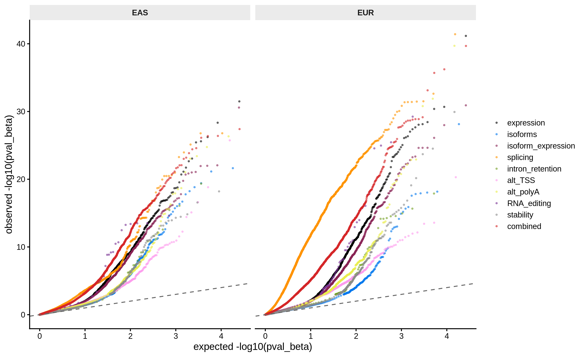
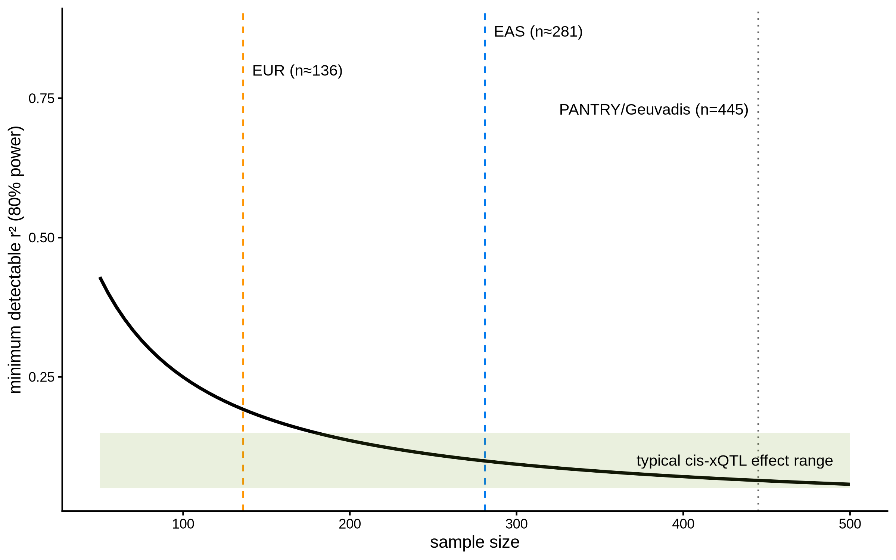

3 Pipeline and calibration
Processing pipeline and mapping calibration, in the style of DevBrain Fig. S2 (pipeline) and Figs. S3/S5/S6 (per-modality mapping QC: HCP optimization, permutation calibration, signal fraction).
3.1 Pipeline recap
- Phenotypes: 9 RNA modalities (gene expression, isoform usage, isoform expression, splice junction usage, intron retention, alternative TSS, alternative polyA, RNA editing, RNA stability), harmonized to genotyped samples (array_id), with NIGMS technical replicates averaged per individual. The two isoform modalities are both built from QU-corrected Salmon transcript counts (mean count ≥ 10), length-normalized to TPM (count / effective length, scaled per sample to sum to 10^6): isoform usage is within-gene relative-abundance ratios (transcript TPM / gene-total TPM; PANTRY convention, mean ratio in [0.05, 0.95]) and isoform expression is the pre-ratio transcript TPM abundance (DevBrain §3.3 convention). Per ancestry stratum: feature filtering (isoform usage: usage > 0.1 in > 25% of samples; isoform expression: TPM > 0.1 in > 25% of samples, DevBrain §3.3; ratio modalities: detected in ≥ 40%, DevBrain §3.4). The two count-based expression modalities (gene expression, isoform expression) are then normalized by edgeR TMM -> DESeq2 VST on the pooled count matrices (gene-level lengthScaledTPM counts; QU-corrected transcript counts), terminal — no rank-based INT — with cohort indicators as known covariates in HCP estimation and in the mapping model (PsychENCODE/isoTWAS convention). The ratio-based modalities are batch-median NA-imputed, quantile-normalized across the pooled stratum + rank-based inverse-normal transformed per phenotype within each cohort, with cohort indicator covariates in the mapping model absorbing residual cohort effects. For the INT modalities no log2 pre-transform is applied: rank-based INT is invariant to any monotone transform, so log2/VST would be exact no-ops on the mapped scale.
- Genotypes: ancestry-stratified plink2 pgen; variants filtered to MAF ≥ 0.01 with MAC ≥ 5 (≥ 5 minor alleles) at the genotype intersection — the count floor excludes low-carrier tests, which can produce spurious associations, while MAF 0.01 keeps the variant pool as large as defensible. tensorQTL’s own MAF ≥ 0.01 filter applies on top at mapping time.
- Genotype PCA: cohort-only PCA per ancestry on LD-pruned variants
(plink2
--indep-pairwise 200 50 0.2, then--pca 20 exact) — the GTEx convention. - Covariates: per ancestry × modality, first-5 genotype PCs + HCP factors
1–k* (k* selected per ancestry × modality by module 25b, chr1 eGene
maximization on each modality’s own HCPs) + sex + maternal
age + cell-type fractions (Syncytiotrophoblast as reference). The maternal
cell-fraction covariate (
ct_Maternal) is excluded BEFORE pruning by analysis decision (coded--exclude-covariates); the remaining pool is correlation-pruned (iterative max-|r| > 0.9 removal, protecting sex > PCs > cell types > HCPs — correlated HCPs are dropped, so effective k can fall below nominal k*) with no covariate cap (details and QC below). - Mapping (tensorQTL, cis window ±1 Mb): (i) per-modality grouped —
all phenotypes of a gene within a modality tested as one group
(permutation-calibrated gene-level p-value; the row label is the
driver phenotype); (ii) combined — all phenotypes of a gene across
all modalities as one cross-modality group (PANTRY’s headline design);
(iii) ungrouped — per-phenotype lead variants for transcript-level
resolution, and the discovery layer of record for fine-mapping;
(iv) stepwise (
cis.map_independent) for conditionally independent signals, entered at FDR ≤ 5% and run on the grouped, ungrouped, and combined layers alike. - Multiple testing: Storey q-values on the
permutation-calibrated p-value (pval_beta), computed with the R
qvaluepackage (default lambda) — the GTEx convention, and statistically identical to tensorQTL’s owncalculate_qvalues. (On this cluster the rpy2/conda-R route toqvaluehits an unresolvable libstdc++/GLIBCXX conflict, so q-values are computed through a file-based bridge to the singularity R container used elsewhere in the pipeline.)
3.3 Permutation-calibrated p-value QQ plots

Two reference points calibrate the reading. EAS splicing — the lowest-signal layer (a handful of FDR ≤ 5% hits) — departs from the diagonal only mildly (genomic-control λ at the median = 4.21), while every signal-bearing layer, EUR splicing now included (λ = 17.37), departs upward broadly and early with λ at the median of 1.45–17.37 — the expected QQ signature when a substantial fraction of tests are true associations (Storey π1 up to 76%; below). The EAS splicing curve is the calibration control: technical inflation from the shared mapping machinery would bend it like the signal-bearing layers, and it is instead the flattest curve on the plot — the calibration is honest where signal is weakest, and the EUR splicing departure matches the signature of its FDR-significant catalog rather than of artifact.
3.4 Signal fraction (Storey π1) per layer
| layer | ancestry | modality | n | pi1 | min_q |
|---|---|---|---|---|---|
| combined | EAS | combined | 12711 | 0.475 | 0 |
| combined | EUR | combined | 13209 | 0.569 | 0 |
| grouped | EAS | splicing | 5284 | 0.526 | 0 |
| grouped | EAS | RNA_editing | 353 | 0.428 | 0 |
| grouped | EAS | isoform_expression | 12343 | 0.300 | 0 |
| grouped | EAS | alt_polyA | 7276 | 0.275 | 0 |
| grouped | EAS | expression | 12568 | 0.273 | 0 |
| grouped | EAS | alt_TSS | 7720 | 0.270 | 0 |
| grouped | EAS | isoforms | 9060 | 0.177 | 0 |
| grouped | EAS | stability | 4493 | 0.159 | 0 |
| grouped | EAS | intron_retention | 1808 | 0.156 | 0 |
| grouped | EUR | splicing | 7618 | 0.757 | 0 |
| grouped | EUR | RNA_editing | 885 | 0.351 | 0 |
| grouped | EUR | alt_TSS | 7889 | 0.335 | 0 |
| grouped | EUR | alt_polyA | 7359 | 0.293 | 0 |
| grouped | EUR | expression | 13150 | 0.272 | 0 |
| grouped | EUR | isoform_expression | 13143 | 0.268 | 0 |
| grouped | EUR | intron_retention | 2610 | 0.193 | 0 |
| grouped | EUR | isoforms | 9242 | 0.179 | 0 |
| grouped | EUR | stability | 7376 | 0.172 | 0 |
| ungrouped | EAS | RNA_editing | 3120 | 0.188 | 0 |
| ungrouped | EAS | isoform_expression | 36441 | 0.188 | 0 |
| ungrouped | EAS | alt_TSS | 29057 | 0.176 | 0 |
| ungrouped | EAS | alt_polyA | 25552 | 0.169 | 0 |
| ungrouped | EAS | splicing | 56149 | 0.168 | 0 |
| ungrouped | EAS | stability | 4493 | 0.162 | 0 |
| ungrouped | EAS | isoforms | 20673 | 0.141 | 0 |
| ungrouped | EAS | intron_retention | 3812 | 0.118 | 0 |
| ungrouped | EUR | splicing | 75470 | 0.364 | 0 |
| ungrouped | EUR | RNA_editing | 17484 | 0.188 | 0 |
| ungrouped | EUR | alt_TSS | 35792 | 0.186 | 0 |
| ungrouped | EUR | isoform_expression | 39554 | 0.178 | 0 |
| ungrouped | EUR | stability | 7376 | 0.174 | 0 |
| ungrouped | EUR | alt_polyA | 31841 | 0.166 | 0 |
| ungrouped | EUR | intron_retention | 10343 | 0.142 | 0 |
| ungrouped | EUR | isoforms | 21901 | 0.120 | 0 |
π1 estimates are 12–76% across all cells, with the largest fractions in EUR splicing grouped and EUR combined combined. Storey q-values diverge from BH exactly where they should: in high-π1 cells the estimated π0 < 1 deflates q-values relative to BH (max |q − BH| across the combined layer = 0.69, at the null end of the ranked list where BH q-values approach 1). At the FDR ≤ 5% boundary the π0 lift admits 3252 vs 2180 (EAS) and 5906 vs 4306 (EUR) combined-layer eGenes for Storey vs BH — the expected, conservative behavior.
3.5 Power analysis

| ancestry | modality | n_tested | alpha | min_r2_our_n | min_r2_pantry_n |
|---|---|---|---|---|---|
| EAS | expression | 12568 | 0 | 0.099 | 0.064 |
| EAS | isoforms | 9060 | 0 | 0.097 | 0.063 |
| EAS | isoform_expression | 12343 | 0 | 0.099 | 0.064 |
| EAS | splicing | 5284 | 0 | 0.093 | 0.060 |
| EAS | intron_retention | 1808 | 0 | 0.085 | 0.055 |
| EAS | alt_TSS | 7720 | 0 | 0.096 | 0.062 |
| EAS | alt_polyA | 7276 | 0 | 0.095 | 0.062 |
| EAS | RNA_editing | 353 | 0 | 0.073 | 0.047 |
| EAS | stability | 4493 | 0 | 0.092 | 0.059 |
| EUR | expression | 13150 | 0 | 0.192 | 0.064 |
| EUR | isoforms | 9242 | 0 | 0.188 | 0.063 |
| EUR | isoform_expression | 13143 | 0 | 0.192 | 0.064 |
| EUR | splicing | 7618 | 0 | 0.185 | 0.062 |
| EUR | intron_retention | 2610 | 0 | 0.171 | 0.057 |
| EUR | alt_TSS | 7889 | 0 | 0.186 | 0.062 |
| EUR | alt_polyA | 7359 | 0 | 0.185 | 0.062 |
| EUR | RNA_editing | 885 | 0 | 0.156 | 0.051 |
| EUR | stability | 7376 | 0 | 0.185 | 0.062 |
| EAS | combined | 12711 | 0 | 0.099 | 0.064 |
| EUR | combined | 13209 | 0 | 0.192 | 0.064 |
At n ≈ 136 (EUR), only xQTLs explaining ≳ 19% of phenotype variance are detectable at genome-wide thresholds; the larger EAS stratum (n ≈ 281) brings the floor to ≈ 10% — versus ≈ 6% at PANTRY’s n = 445. For reference, PANTRY (n = 445) reported 6,798 eGenes and a 66% discovery gain from non-expression modalities; GTEx tissues at n ≈ 150 typically report hundreds to ~2,000 eGenes. The yield (28517 FDR ≤ 5% phenotype-level associations; 9158 combined-layer eGenes) sits within that range.
3.6 Carrier-count audit: MAC floor propagation
| ancestry | layer | min_carriers | n_lt5 | n_total |
|---|---|---|---|---|
| EAS | combined | 6 | 0 | 12711 |
| EAS | grouped | 6 | 0 | 60905 |
| EAS | ungrouped | 6 | 0 | 179297 |
| EUR | combined | 3 | 4519 | 13209 |
| EUR | grouped | 3 | 16264 | 69272 |
| EUR | ungrouped | 3 | 59065 | 239761 |
The MAC ≥ 5 floor is applied at the genotype intersection in module 23 (before outlier exclusion). A fraction of tests retain < 5 carriers in the mapping sample sets (audit table) because the floor predates outlier exclusion and modality-specific sample attrition. No FDR-significant result should be carrier-limited; hit lists should be post-filtered to ma_count ≥ 5, and re-applying the floor after outlier exclusion would remove them at the source.